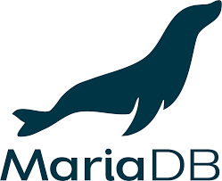
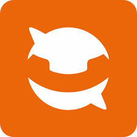
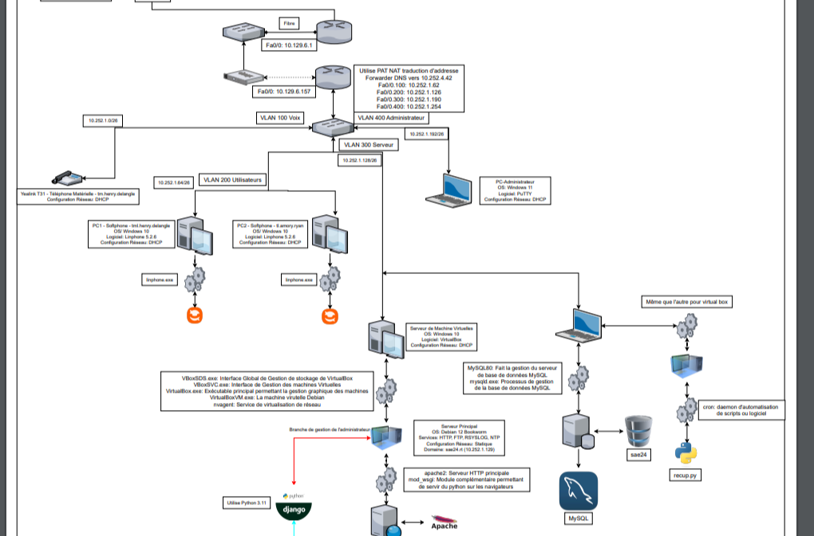
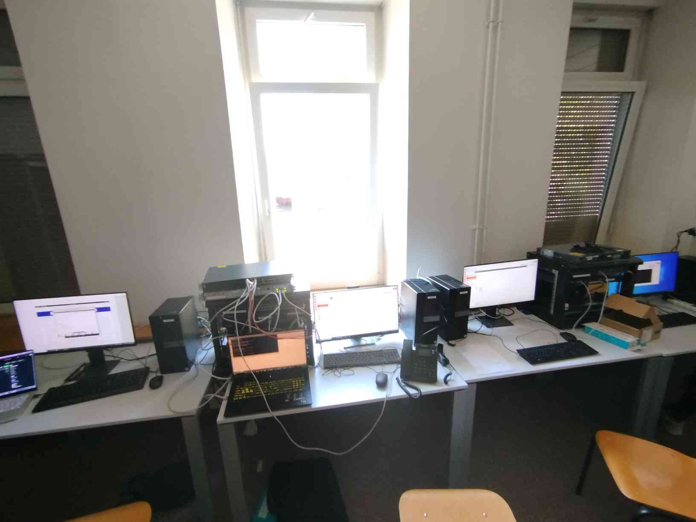
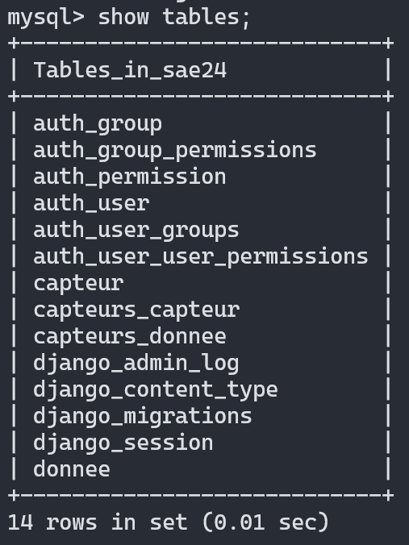
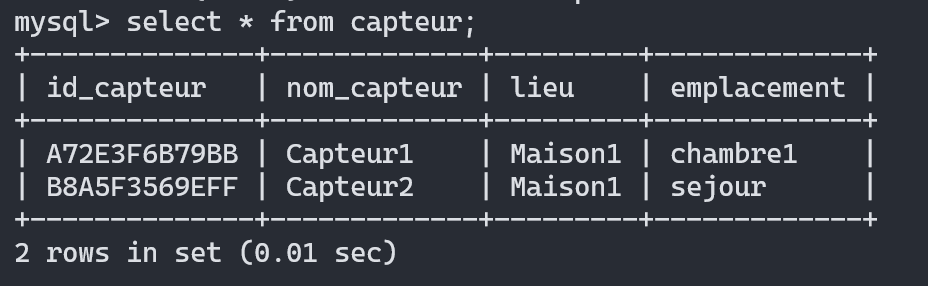
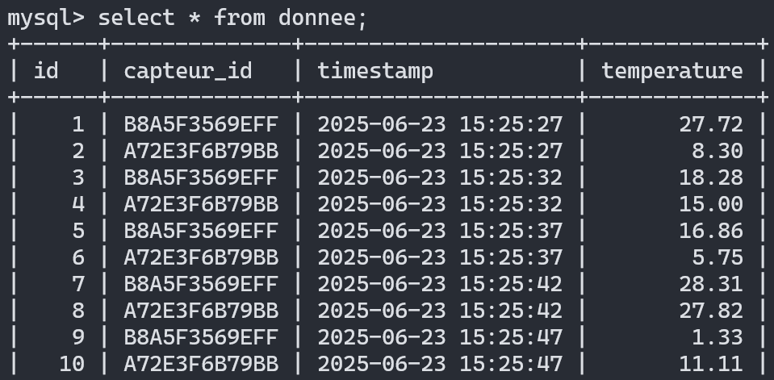

Résumé de la SAE
Objectif : Ce projet intégratif a pour but de regrouper les connaissances et projets de la première année au sein d'une même infrastructure. Il s'agit de mettre en place une solution informatique complète pour une entreprise, couvrant le réseau local, la téléphonie IP, la collecte de données via capteurs et leur restitution sur une interface web.
Le projet est divisé en quatre pôles majeurs : Réseau, Téléphonie, Collecte IoT et Web/BdD.
Consulter le code source sur GitHubEnvironnement et Outils
Infrastructure Cisco
Configuration de routeurs et commutateurs physiques pour le cœur de réseau (VLANs, Routage, NAT).
Python
Scripts d'acquisition MQTT et logique métier pour le traitement des données capteurs.
Django
Framework Web utilisé pour créer le dashboard dynamique et l'API de restitution des données.

MariaDB
Système de base de données relationnelle centralisant les relevés de température.
Debian
Système d'exploitation des serveurs virtualisés hébergeant les scripts et le site web.

Linphone
Logiciel Softphone utilisé pour tester la connectivité SIP sur les différents VLANs.
Architecture de l'Infrastructure


Grandes étapes techniques
1. Segmentation Réseau
Mise en place de 4 VLANs (Voix, Utilisateurs, Serveur, Administrateur) et configuration du routage inter-VLAN.
2. Sécurisation Infrasystème
Mise en place de filtrage ACL sur le routeur et de règles iptables strictes sur le serveur Debian.
3. Communication VoIP
Inscription de softphones et téléphones physiques SIP, et configuration de la connectivité réseau pour les flux voix.
4. Collecte MQTT (Python)
Développement du script d'écoute du broker MQTT et automatisation de l'insertion en base MariaDB.
5. Développement Web (Django)
Conception du site dynamique gérant l'affichage temps réel des données collectées.
6. Déploiement Services
Mise en production Apache2, synchronisation NTP et centralisation des logs via Rsyslog.
Mon rôle dans le projet
Lors de cette SAE effectuée en groupe, mon rôle était la récupération des données de température via MQTT et l'affichage de celle-ci sur un site Web. Pour la collecte, j'ai utilisé un script python sur une VM Debian, qui tournait en permanence et était relié à une base de données MariaDB. Cette base de données était elle-même reliée à un site web dynamique créé à l'aide de Django dont le but était d'afficher l'ensemble des données.
Organisation de la Base de Données
La base MariaDB structure les informations pour identifier les capteurs et historiser les relevés.



Dashboard Dynamique (Django)

- Actualisation AJAX : Requêtes asynchrones toutes les 5 secondes pour mettre à jour les données sans rechargement de page.
- Visualisation Graphique : Intégration de Chart.js pour suivre l'évolution temporelle des capteurs.
- Filtrage métier : Tri dynamique par ID capteur, nom ou plage de dates via les vues Django.
- Export de données : Fonctionnalité permettant de télécharger les relevés filtrés au format CSV.
Compétences validées
- AC11.03 Configurer les fonctions de base du réseau local.
- AC12.04 Connecter les systèmes de ToIP (Téléphonie sur IP).
- AC13.01 Utiliser un système informatique et ses outils (Virtualisation, Linux).
- AC13.05 Choisir les mécanismes de gestion de données adaptés (MariaDB).
- AC13.06 S'intégrer dans un environnement propice au développement (Gantt).
Analyse réflexive
Lors de ce projet, j'ai pu retravailler l'ensemble des notions vues en première année. Etant arrivé en cours d'année, ce projet m'a permis d'être confiant sur les acquis du second semestre. Je suis parvenu à m'organiser efficacement dans ce projet pour finir ma partie dans les temps et comprendre les autres sections du projet. De plus, j'ai apprécié travailler sur du matériel physique car cela renforce l'aspect réaliste du projet.